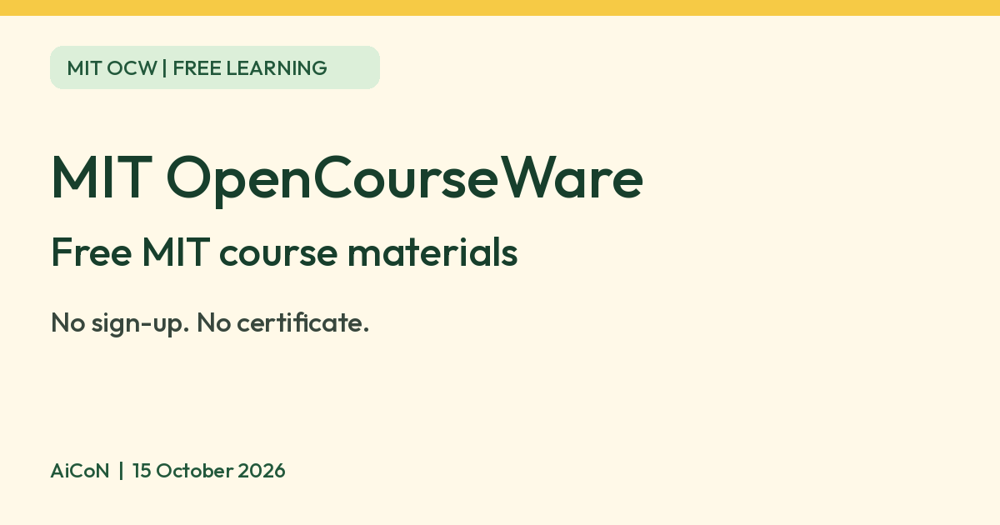

MIT OpenCourseWare: free course materials from MIT, no sign-up
MIT OpenCourseWare says it shares free materials from 2500+ MIT courses, with no sign-up. It does not give credit or certificates.

What it is
MIT OpenCourseWare (OCW) is a free collection of course materials from MIT. Its About page says it has 2500+ MIT courses, covering the entire MIT curriculum, and has been running since 2001. Each course has a syllabus and some teaching material such as lecture notes or reading lists, plus learning activities such as assignments or exams. Many courses also have full video lectures and free online textbooks. It is not an AI tool. We included it because it is free educational content from an official source.
Is it free?
Yes. The Get Started page says OCW is "a free and open publication of material". You do not need to sign up, enrol or register, and there are no start or end dates. You can browse pages, watch videos and download files without registration.
What you do not get
- No credit or certificate. The Get Started page says OCW offers no degree, credit or certification. It points to separate MIT programmes for certificates, such as MITx. We did not check whether those are free, so do not assume they are.
- Not every course has video. The page says video is only available for some courses because of production cost.
- Some readings are missing. The FAQ says course packs and readings often contain copyrighted work that OCW cannot provide under its licence.
- It is not a class. There is no teacher feedback or grading. You learn at your own pace.
How to use it
- The Get Started page suggests you start with the syllabus and calendar of a course, which give the goals, key topics and the order of what is taught.
- It lists "Courses with Video or Audio Lectures", "Most Popular Courses" and "OCW Scholar Courses" as popular places to start.
- You can study a course from beginning to end or pick individual topics from different courses.
- The site links to MIT OpenCourseWare's YouTube channel (youtube.com/mitocw), which has lecture videos. We did not watch any videos for this guide.
- The About page also mentions mirror drives, which are an offline option. We did not check how to get one.
Can I reuse the material?
- The Terms page says OCW materials are under the Creative Commons Attribution-NonCommercial-ShareAlike 4.0 licence (CC BY-NC-SA 4.0). You may copy, share and adapt them for non-commercial use if you credit MIT OpenCourseWare, link to the licence and say if you made changes. Adapted work must use the same licence.
- The licence summary says it may not give you every permission you need, and that other rights such as privacy may limit how you use material.
- The Terms page says "MIT" and its logos and seal are trademarks. You may not use them without MIT's written consent, except for attribution. For that reason this guide uses no MIT logo.
Privacy and data
- OCW's privacy section says it does not collect personally identifiable information unless you provide it, for example when you subscribe to the newsletter, send feedback or answer a survey.
- It says the site uses Google Analytics, including the Demographics and Interest Reporting feature, with a DoubleClick cookie, and may use other analytics tools. It says cookies are not required to use OCW and you can opt out of the Google Analytics cookie.
Which devices
- OCW is a website. We found no official OCW app, and we did not test the site on a phone.
India
- We found no India-specific restriction on the pages we read. The Get Started page says you can use OCW "anytime, anywhere". We did not check which courses have subtitles or translations.
Frequently asked questions
Is MIT OpenCourseWare free?
Yes. No sign-up is needed.
Do I get a certificate?
No. OCW says it gives no credit, degree or certificate.
Can I download the files?
The site says you can download files and courses for later, under its Creative Commons licence.
Sources: About, Get Started, Privacy and Terms of Use. Checked 15 October 2026.
No MIT logo is used, because MIT's terms restrict its logos. Independent guide, not affiliated.